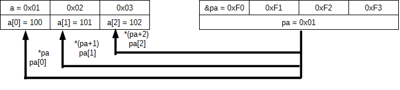

アクティビティ: C言語のポインタ
学習項目: [5] 配列とポインタ変数
ひとつ前の学習項目で挙げたポインタ変数にアドレス値を代入する 3 つの方法を改めて示します。
(1) アドレス値を直接代入
(2) アドレス演算子を使って変数のアドレスを代入
(3) 配列の先頭アドレスを代入
ここでは(3)の方法について具体的に説明します。
ポインタ変数 = 配列の名前
(例) ※ポインタ変数に指定する型と配列の型は合わせる必要があります char a[3]; char *pa; pa = a;
この様にポインタ変数に配列の先頭アドレスを代入することで「ポインタ変数に配列を参照させる」ことが出来ます。
例えば上の例の char 型のポインタ変数 pa に char 型の配列 a を参照させた時のメモリ空間の状態が次の図 1 です。
char a[3]; // OS が 0x01 番地(※1)から配列 a の領域を取る char *pa; // OS が 0xF0 番地(※1)から 4 バイト分(※2)を pa の領域とする a[0] = 100; // a[0] に 100 を代入する a[1] = 101; // a[1] に 101 を代入する a[2] = 102; // a[2] に 102 を代入する pa = a; // pa に a の先頭アドレス、つまり今回は 0x01 を代入する
※1. 例なのでアドレス値は適当に決めています。
実際には OS がアドレスを決めます。
※2. 例なのでポインタ変数のデータサイズは 4 バイトにしていますが、実際にはシステムによってポインタ変数のデータサイズは変わります。
さて変数ひとつの参照の時と違い、配列の場合は各要素ごとに参照の矢印が引かれていることに着目して下さい。
ポインタ変数を使って配列 a の i 番目の要素 a[i] の要素の値を取得したり値を代入出来る
(1) 間接演算子を使う記法: *(pa+i)
又は
(2) []を使う記法: pa[i]
(例) メモリ空間が図 1 の状態になっているなら
printf("%d\n", *(pa+1) ); ・・・ a[1] の値(=101)を表示する
printf("%d\n", pa[0] ); ・・・ a[0] の値(=100)を表示する
*pa = 1; ・・・ a[0] に 1 を代入する(※)
pa[2] = 3;・・・ a[2] に 3 を代入する
※ *(pa+0)と同じ意味です
どちらの記法を使っても同じ結果になりますので基本的に好みの方を使って結構です。
ただしチームで開発する時はみんながバラバラの記法をすると混乱しますのでどちらかに統一した方が良いと思います。